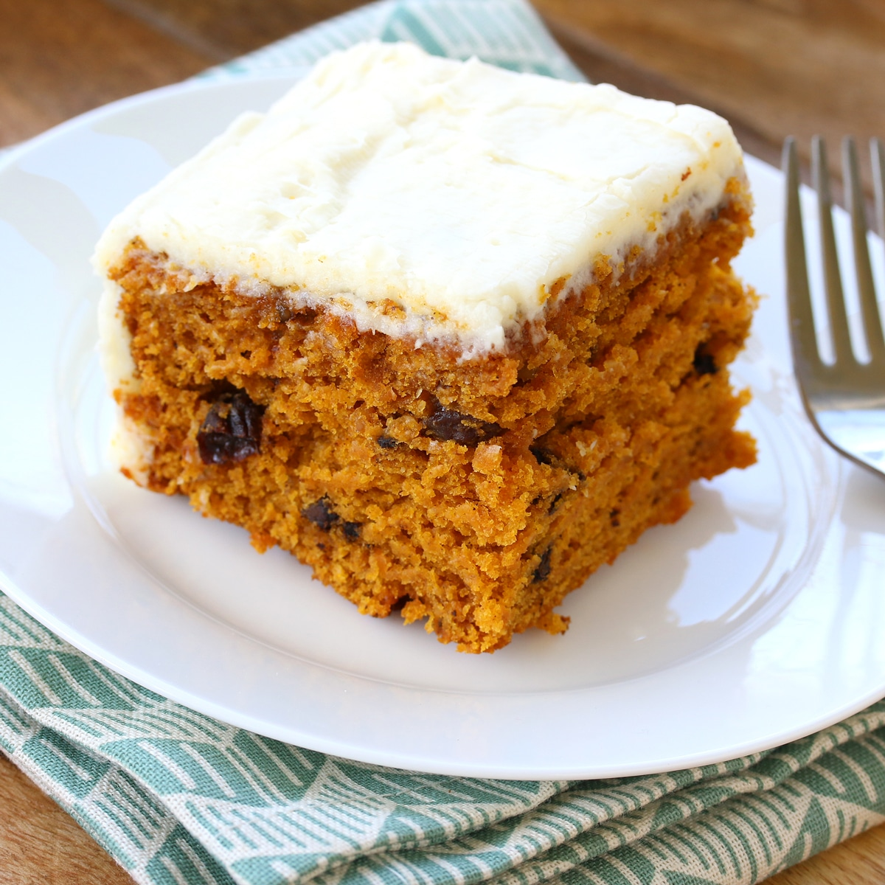

Easy carrot cake

Ingredients
-
235ml vegetable oil, plus extra for the tin
-
100g natural yogurt
-
4 large eggs
-
1½ tsp vanilla extract
-
½ an orange, zested
-
265g self-raising flour
-
335g light muscovado sugar
-
2½ tsp ground cinnamon
-
¼ fresh nutmeg
-
265g carrots (about 3), grated
-
100g sultanas or raisins
-
100g walnuts or pecans, roughly chopped (optional)
Steps
-
Heat oven to 180C/160C fan/gas 4. Oil and line the base and sides of two 20cm cake tins with baking parchment. Whisk the oil, yogurt, eggs, vanilla and zest in a jug. Mix the flour, sugar, cinnamon and nutmeg with a good pinch of salt in a bowl. Squeeze any lumps of sugar through your fingers, shaking the bowl a few times to bring the lumps to the surface.
-
Add the wet ingredients to the dry, along with the carrots, raisins and half the nuts, if using. Mix well to combine, then divide between the tins. Bake for 25-30 mins or until a skewer inserted into the centre of the cake comes out clean. If any wet mixture clings to the skewer, return to the oven for 5 mins, then check again. Leave to cool in the tins.
-
To make the icing, beat the butter and sugar together until smooth. Add half the cream cheese and beat again, then add the rest (adding it bit by bit prevents the icing from splitting). Remove the cakes from the tins and sandwich together with half the icing. Top with the remaining icing and scatter with the remaining walnuts. Will keep in the fridge for up to five days. Best eaten at room temperature.